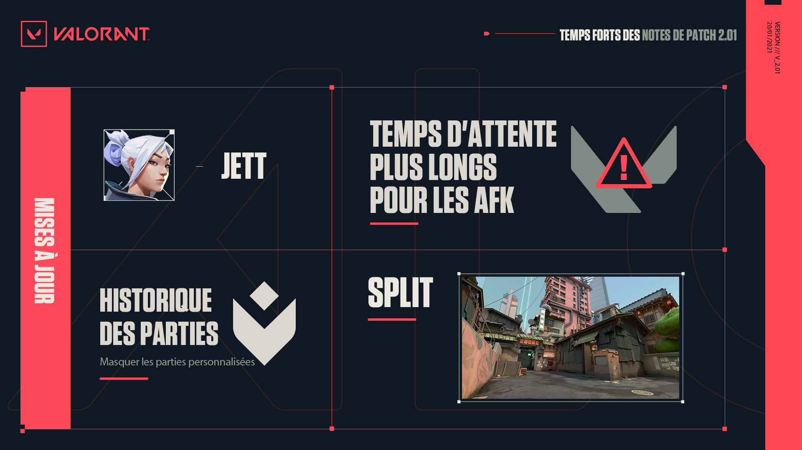

Retrouver ici tous les notes de patch de Valorant et tous les leaks concernant les futurs mises a jour !
Temps fort de la mise a jours 2.01

Jett :
La durée des fumigènes a été réduite : 7sec >>> 4,5sec
Rework de Split :
• La largeur du passage de Principal B a été agrandie.
Cela devrait permettre aux attaquants de passer plus facilement.
Les défenseurs ne pourront plus les coincer aussi aisément dans le goulet d'étranglement.
En couverture, les attaquants peuvent utiliser une caisse de l'autre côté du passage, ce qui offre un nouvel angle d'où utiliser des utilitaires.
• En plus des changements à Principal B, une pile de déchets de plus a été placée dans le coin pour empêcher les défenseurs de se cacher dans une encoignure trop profonde.
Cela crée un nouvel angle vers Principal B quand on se tient sur le nouvel objet.
• La zone de pose du spike a été élargie.
Cela offre aux attaquants un nouveau lieu de pose qu'ils pourront défendre depuis Principal B.
• Un nouvel empilement permet de se mettre à couvert dans le site B. Les joueurs peuvent isoler les angles plus efficacement.
Cela casse aussi un angle 50/50 vertical quand on observe le site depuis Principal B.
La largeur de l'entrée de Conduit a été augmentée.
• Un mur a été ajouté dans Conduit afin de supprimer un check 50/50 en entrant dans Conduit depuis le milieu.
Ce nouveau mur vous protège également des tirs à travers le mur.
• La zone du restaurant Scuttle Crab a été simplifiée.
Cela devrait permettre à la carte de paraître plus ouverte et vous aider à nettoyer la zone sans recourir massivement aux utilitaires.
• La profondeur du cul-de-sac dans Égout a été réduite pour vous permettre de passer la zone avec plus de sécurité.
• La largeur du passage vers Tour A a été augmentée pour réduire la protection de ses défenseurs.
Ce changement devrait rendre plus intéressant le contrôle de Rampes A
• L'angle du mur de biais a été modifié.
• Cela permet de contrôler le coin arrière un peu plus tôt. Cet angle est toujours sûr depuis Tour A, mais vous pouvez désormais le voir en marchant sur Chevrons sans avoir besoin de descendre sur le site.
• La profondeur du mur près d'Écrans a été modifiée, ce qui permet de sortir d'Écrans en prenant moins de risques, sans le renfort d'utilitaires.
Mises a jours du mode compétition :
• La possibilité de cacher les résultats des parties personnalisées a été ajoutée dans l'historique des parties.
Vous avez été nombreux, surtout chez les pros, à nous demander de pouvoir masquer les résultats des parties personnalisées dans l'historique des parties, afin de pouvoir vous entraîner sans que les autres joueurs n'analysent vos stratégies. Nous voulions vous proposer cette fonction avant les Challengers pour que vous puissiez vous entraîner sans souci.
Mises à jour sociales :
• Le bouton Ajouter un ami n'existe plus que pour les coéquipiers, et la capacité d'ajouter des joueurs de l'autre équipe a été supprimée.
Le bouton Ajouter un ami n'apparaîtra pas près du nom des coéquipiers qui ont activé le mode privé/streamer.
• Les temps d'attente imposés aux joueurs qui ont été AFK pendant une partie ou pendant l'avant-partie ont été ajustés.
Nous voulons nous assurer que les joueurs qui subissent des problèmes de connexion ne seront pas trop sévèrement pénalisés, mais que ceux qui sont délibérément AFK seront punis comme il convient.
Nous allons également ajouter une tolérance à l'AFK pendant un certain nombre de manches, mais les infractions répétées ou étendues seront punies par des temps d'attente supérieurs.
Bugs :
• Correction d'un problème à cause duquel les indicateurs de promotion et de relégation empiétaient sur le rang des joueurs dans la page Carrière.
• Correction d'un bug qui faisait apparaître une icône Radiant ou un message d'erreur sur l'écran de fin de partie au lieu des informations de rang attendues.
• Correction d'un bug à cause duquel l'Œillade de Reyna n'apparaissait pas correctement sur la minicarte.
• Correction d'un bug à cause duquel les crédits n'étaient pas remboursés correctement après la vente d'une arme achetée par un coéquipier.
• Correction d'un bug qui provoquait un affichage incorrect des effets visuels des éclats lumineux hors écran.
• Correction d'un bug qui faisait apparaître brièvement l'emplacement de départ de Phoenix sur la minicarte s'il se faisait tuer pendant sa Revanche.
• Correction d'un problème qui provoquait un mauvais alignement des effets visuels de la reformation d'Omen avec son point d'apparition quand il utilisait Voie des ombres.
• Correction d'un problème à cause duquel Jett pouvait déclencher le son du désamorçage tout en faisant une ruée.
• Correction d'un problème à cause duquel Omen pouvait déclencher le son du désamorçage tout en se téléportant.
• Correction d'un problème qui faisait persister le leurre de la Feinte de Yoru dans la zone de jeu après sa mort.
• Correction d'un problème qui permettait de poser le Boum Bot de Raze à travers certains murs.
• Correction d'un problème qui permettait à Omen d'être équipé de son arme avant d'avoir fini de reprendre sa forme pendant Depuis les ombres.
• Correction d'un problème à cause duquel l'interface de Revitalisation ne se mettait pas à jour quand Skye utilisait la compétence.
• Correction d'un problème de cumul des cadences de tir quand un joueur se trouvait près d'une Balise stimulante de Brimstone au moment où une autre se terminait.
• Correction d'un problème à cause duquel Skye n'indiquait pas correctement la zone dans laquelle elle se trouvait.